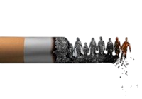

El tabaquismo es una de las principales problematicas sociales y de salud pública a nivel mundial. Consiste en el consumo habitual de productos que contienen tabaco, especialmente cigarrillos, los cuales contienen nicotina, una sustancia altamente adictiva. Este problema afecta a personas de todas las edades, aunque suele comenzar durante la adolescencia debido a factores como la presion social, la curiosidad, la influencia de amigos o familiares fumadores y la publicidad. Ademas de perjudicar la salud de quienes fuman, afecta a las personas que conviven con ellos, ya que el humo del tabaco contiene sustancias tóxicas que pueden ser inahaladas involuntariamente. Esto provoca que los llamados fumadores pasivos también corran riesgos de desarrollar enfermedades respiratorias y cardioasculares.
- Enfermedades respiratorias como bronquitis crónica y efisema.
- Mayor riesgo de cáncer, especialmente de pulmón, garganta y boca.
- Enfermedades cardiovasculares, como infartos y accidentes cerebrovasculares.
- Daño a la salud de fumadores pasivos.
- Dependencia a la nicotina, lo que dificulta abandonar el hábito.
- Envejecimiento prematuro.
- Salud bucal; manchas en los dientes.
- Realizar campañas de información sobre los riesgos del tabaquismo.
- Ofrecer apoyo psicológico y médico para dejar de fumar.
- Restringuir la publicidad y venta de productos de tabaco a menores de edad.
- Involucrar a las familias y escuelas en la prevención del consumo del tabaco.
- Fomentar programas educativos que desarrollen habilidades para resistir la presión social.
- Promover estilos de vida saludables mediante el deporte y actividades recreativas.